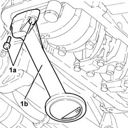

1084B26 emgine oil intake duct - r r
- Path
- Procedures > 10 ENGINE > 1084 ENGINE LUBRICATION SYSTEM > 1084B engine oil lubrication circuit > 1084B26 emgine oil intake duct - r r
- Kind
- repair procedure (removal / refitting; the operation number is the code)
- Applies to
- engines: 1.6 TS, 2.0 TS, 1.9 JTD 8V, 1.9 JTD 16V; all production periods
- Interactive page
- https://sloeber94.github.io/elrnDB-a147/en/#/3024896
Applies to: engines: 1.6 TS; all production periods
 Removing
Removing
 Refitting
RefittingPosition the vehicle on the ramp.
Ensure that the ignition key is in the OFF postition, then disconnect the battery negative terminal.
 | Name | Connector |
|---|---|---|
- | Battery |
Proceed with the removal 4450B10 Front WHEEL (one) - R.R. (Right side).
Proceed with the removal 7055B64 Engine compartment DUST shield in front wheel arch (one), left or right - R.R. (Right side).
Proceed with the removal 1072C44 exhaust manifold heat shield on bulkhead - r+r .
Applies to: engines: 1.6 TS; all production periods; only with equipment: 103 CV
Proceed with the removal 1080B62 catalytic converter - r + r .
Applies to: engines: 1.6 TS; all production periods; only with equipment: 120 CV
Proceed with the removal 1080B40 catalytic pre-converter - r r .
Applies to: engines: 1.6 TS; all production periods
Proceed with the removal 1008A44 rear rigid mount - r r .
Proceed with the removal 1092G10 single engine belt r r .
Proceed with the removal 1092A10 Crankshaft services PULLEY - R.R. .
Proceed with the removal 1020A20 crank case oil sump - r + r clean seals for sealant application .
1. Undo the bolts (1a) and remove the engine oil inlet (1b) complete with gasket.

Applies to: engines: 1.6 TS; all production periods
Refitting
RemovingPlace the engine oil inlet, complete with gasket, back in its housing and secure it tightening the bolts to the recommended torque.
 | Fastening | Component | Ø | Value (daNm) |
|---|---|---|---|---|
- | Bolt | OIL SECTION PUMP | M7 | 1.4 ÷ 1.7 |
Proceed with the refitting 1020A20 crank case oil sump - r + r clean seals for sealant application .
Proceed with the refitting 1092A10 Crankshaft services PULLEY - R.R. .
Proceed with the refitting 1092G10 single engine belt r r .
Proceed with the refitting 1008A44 rear rigid mount - r r .
Applies to: engines: 1.6 TS; all production periods; only with equipment: 103 CV
Proceed with the refitting 1080B62 catalytic converter - r + r .
Applies to: engines: 1.6 TS; all production periods; only with equipment: 120 CV
Proceed with the refitting 1080B40 catalytic pre-converter - r r .
Applies to: engines: 1.6 TS; all production periods
Proceed with the refitting 1072C44 exhaust manifold heat shield on bulkhead - r+r .
Proceed with the refitting 7055B64 Engine compartment DUST shield in front wheel arch (one), left or right - R.R. (Right side).
Proceed with the refitting 4450B10 Front WHEEL (one) - R.R. (Right side).
Connect the battery terminal (-).
Refill the engine oil lubrication system 1084A10 ENGINE OIL - Check level and top up, if necessary .
Remove the car from the ramp.
Applies to: engines: 2.0 TS; all production periods
Removing
RefittingPosition the vehicle on the ramp.
Ensure that the ignition key is in the OFF postition, then disconnect the battery negative terminal.
| Name | Connector |
|---|---|---|
- | Battery |
Proceed with the removal 4450B10 Front WHEEL (one) - R.R. (Right side).
Proceed with the removal 7055B64 Engine compartment DUST shield in front wheel arch (one), left or right - R.R. (Right side).
Proceed with the removal 7055B54 under-engine guard - r r .
Proceed with the removal 1072C44 exhaust manifold heat shield on bulkhead - r+r .
Proceed with the removal 1080B40 catalytic pre-converter - r r .
Proceed with the removal 1008A44 rear rigid mount - r r .
Proceed with the removal 1092G10 single engine belt r r .
Proceed with the removal 1092A10 Crankshaft services PULLEY - R.R. .
Proceed with the removal 1092G20 engine component single belt fixed tensioner - one - r + r .
Proceed with the removal 1092G14 engine component single belt mobile tensioner - r + r .
Proceed with the removal 1032D12 timing system protective cover(s) - r + r .
Proceed with the removal 1020A20 crank case oil sump - r + r clean seals for sealant application .
1. Undo the bolts (1a) and remove the engine oil inlet (1b) complete with gasket.

Applies to: engines: 2.0 TS; all production periods
Refitting
RemovingPlace the engine oil inlet, complete with gasket, back in its housing and secure it tightening the bolts to the recommended torque.
| Fastening | Component | Ø | Value (daNm) |
|---|---|---|---|---|
- | Bolt | OIL SECTION PUMP | M7 | 1.4 ÷ 1.7 |
Proceed with the refitting 1020A20 crank case oil sump - r + r clean seals for sealant application .
Proceed with the refitting 1032D12 timing system protective cover(s) - r + r .
Proceed with the refitting 1092G14 engine component single belt mobile tensioner - r + r .
Proceed with the refitting 1092G20 engine component single belt fixed tensioner - one - r + r .
Proceed with the refitting 1092A10 Crankshaft services PULLEY - R.R. .
Proceed with the refitting 1092G10 single engine belt r r .
Proceed with the refitting 1008A44 rear rigid mount - r r .
Proceed with the refitting 1080B40 catalytic pre-converter - r r .
Proceed with the refitting 1072C44 exhaust manifold heat shield on bulkhead - r+r .
Proceed with the refitting 7055B54 under-engine guard - r r .
Proceed with the refitting 7055B64 Engine compartment DUST shield in front wheel arch (one), left or right - R.R. (Right side).
Proceed with the refitting 4450B10 Front WHEEL (one) - R.R. (Right side).
Connect the battery terminal (-).
Refill the engine oil lubrication system 1084A10 ENGINE OIL - Check level and top up, if necessary .
Remove the car from the ramp.
Applies to: engines: 1.9 JTD 8V; all production periods
Removing
Refitting7055B54 under-engine guard - r r
1076B50 exhaust pipe attachment to engine - r + r
7055B64 Engine compartment DUST shield in front wheel arch (one), left or right - R.R.
1092G10 single engine belt r r
2710A35 intermediate drive shaft mount - r r
1020A20 crank case oil sump - r + r clean seals for sealant application
Applies to: engines: 1.9 JTD 8V; all production periods
Refitting
Removing1020A20 crank case oil sump - r + r clean seals for sealant application
2710A35 intermediate drive shaft mount - r r
1092G10 single engine belt r r
7055B64 Engine compartment DUST shield in front wheel arch (one), left or right - R.R.
1076B50 exhaust pipe attachment to engine - r + r
Applies to: engines: 1.9 JTD 16V; all production periods
Removing
RefittingProceed with removal 7055B54 under-engine guard - r r .
Proceed with removal 1016A10 sound-proofing cover - r + r .
Proceed with removal 1084A16 oil dip stick pipe - r r .
Proceed with removal 1020A20 crank case oil sump - r + r clean seals for sealant application .
Proceed with removal 1084B28 .
Applies to: engines: 1.9 JTD 16V; all production periods
Refitting
RemovingProceed with refitting 1084B28 .
Proceed with refitting 1020A20 crank case oil sump - r + r clean seals for sealant application .
Proceed with refitting 1084A16 oil dip stick pipe - r r .
Proceed with refitting 0010T11 engine oil check level and top up .
Proceed with refitting 1016A10 sound-proofing cover - r + r .
Proceed with refitting 7055B54 under-engine guard - r r .
Topics linked from this page (22)
- 0010T11 engine oil check level and top up
- 1008A44 rear rigid mount - r r
- 1016A10 sound-proofing cover - r + r
- 1020A20 crank case oil sump - r + r clean seals for sealant application
- 1032D12 timing system protective cover(s) - r + r
- 1072C44 exhaust manifold heat shield on bulkhead - r+r
- 1076B50 exhaust pipe attachment to engine - r + r
- 1080B40 catalytic pre-converter - r r
- 1080B62 catalytic converter - r + r
- 1084A10 ENGINE OIL - Check level and top up, if necessary
- 1084A16 oil dip stick pipe - r r
- 1084b28 engine oil intake pump - r + r with crankcase sump removed
- 1092A10 Crankshaft services PULLEY - R.R.
- 1092G10 single engine belt r r
- 1092G14 engine component single belt mobile tensioner - r + r
- 1092G20 engine component single belt fixed tensioner - one - r + r
- 2710A35 intermediate drive shaft mount - r r
- 4450B04 right front wheel r r
- 4450B10 Front WHEEL (one) - R.R.
- 7055B54 under-engine guard - r r
- 7055B64 Engine compartment DUST shield in front wheel arch (one), left or right - R.R.
- A1B Battery ( Connectors )